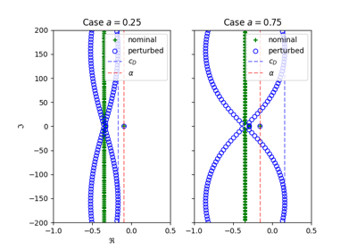
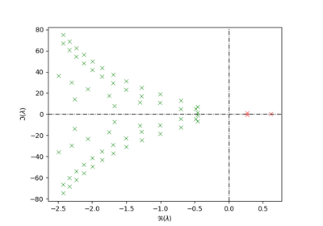
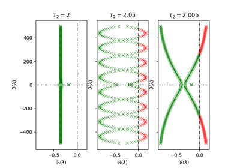
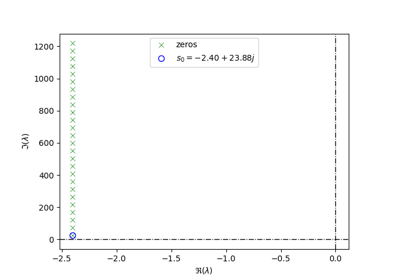
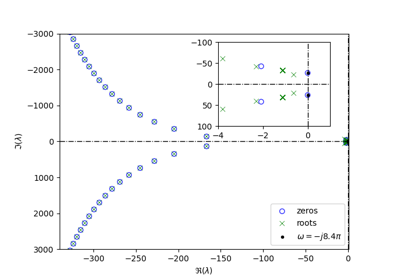
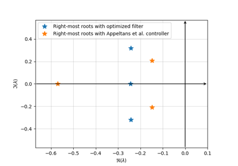

Examples#
Below are examples demonstrating the usage of tdcpy package.
Examples are divided thematically into groups and we recommend to start from top.
If you are coming from MATLAB package tds-control, we recommend starting
with the these examples.
Attention deserves also section with applications that demonstrates real-world usecases for the package.
At the end, you find tutorials - more in-depth examples that cover specific topics step by step.
Stability#
Stabilization via Optimization#

Prelude to strong stability - gradient of c_D
Examples from tds-control manual#

Example 2.1 - Stability analysis of retarded DDE

Example 2.6 - Stability analysis of neutral DDE with multiple delays

Example 2.12 - Stability analysis of a Smith predictor with delay mismatch
Applications#

Spectrum of zero-vibration (ZV) input shaper

Non-collocated vibration absorbtion via delayed resonator

Co-design of PD controllers and low-pass filter for TDS